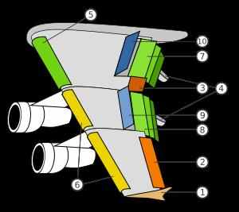

Magnetofonok
Története
A digitális hangrögzítést megelőzően hatalmas népszerűségnek örvendett a mágneses hangrögzítés, amelynek alapjait már 1900-ban szabadalmaztatta Valdemar Poulsen. A technológia hatalmas fejlődésen ment keresztül, míg a '80-as évekre általánossá váltak a kompakt kazetták és a magnetofonok (divatos nevükön magnók) használata.
Nézzük meg, hogyan is működtek ezek az eszközök!
Az alábbi ábrán egy magnókazetta és a lejátszásához szükséges magnetofon mechanikája látható.

A magnetofonok megjelenési formái
A magnók alkatrészei
- Szalagtovábbító görgő
- Lejátszó- és rögzítőfej
- Törlőfej
- A kazetta pozícióját biztosító szegecsek
- Csévélőmotor